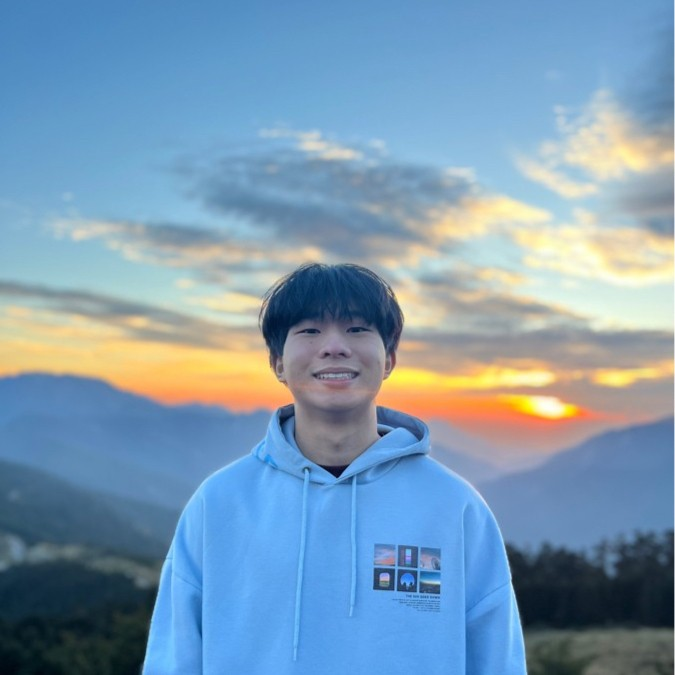

Matthias Chan

NUS Computer Science Undergraduate
Linkedin
Github
Instagram
Contact me
About
Matthias has graduated with a diploma in Business Management. As an individual, he loves solving problems, bringing ideas to life, and relishes in learning new skills. He is flexible, adaptable, and a value-adding team player. He is open to exciting and meaningful opportunities!
Work Experience
- Vybes' Growth and Marketing Intern (March 2022-Aug 2022)
- Crafted 60 Instagram Post and the Demo Product Video for pitching
- Conducted a "OKR" workshop for colleagues
- Utilizing Web 4.0, we empower online creators to monetize their following
-
Global Entrepreneurial Internship (Feb 2022 - Aug 2022)
- Founded OpenJio
- 1 of 2 NYP SBM student chosen for the Global Entrepreneurial Internship Program
- Pitched to 5 different VCs representive's for funding
Education
- NUS Computer Science, Class of 2028
- Kookmin University, 4.45/4.5
- Attain Distinction in all modules over there
NYP exchange in Seoul, South Korea
- NYP Diploma in Business Management with Merit (March 2020-March 2023)
- NYP INTAGE Scholar
- Global Entrepreneurship Challenge | SUSS Brand Challenge 2021 | NYP X Lenovo Retail Challenge
- Director List for All Semesters
Skillset
- Content Creation: ⭐️⭐️⭐️⭐️
- Microsoft Tools: ⭐️⭐️⭐️⭐️⭐️
- Data Analysis: ⭐️⭐️⭐️⭐️
- Web Dev (HTML,CSS,JS): ⭐️⭐️⭐️⭐️
Award/Certifications